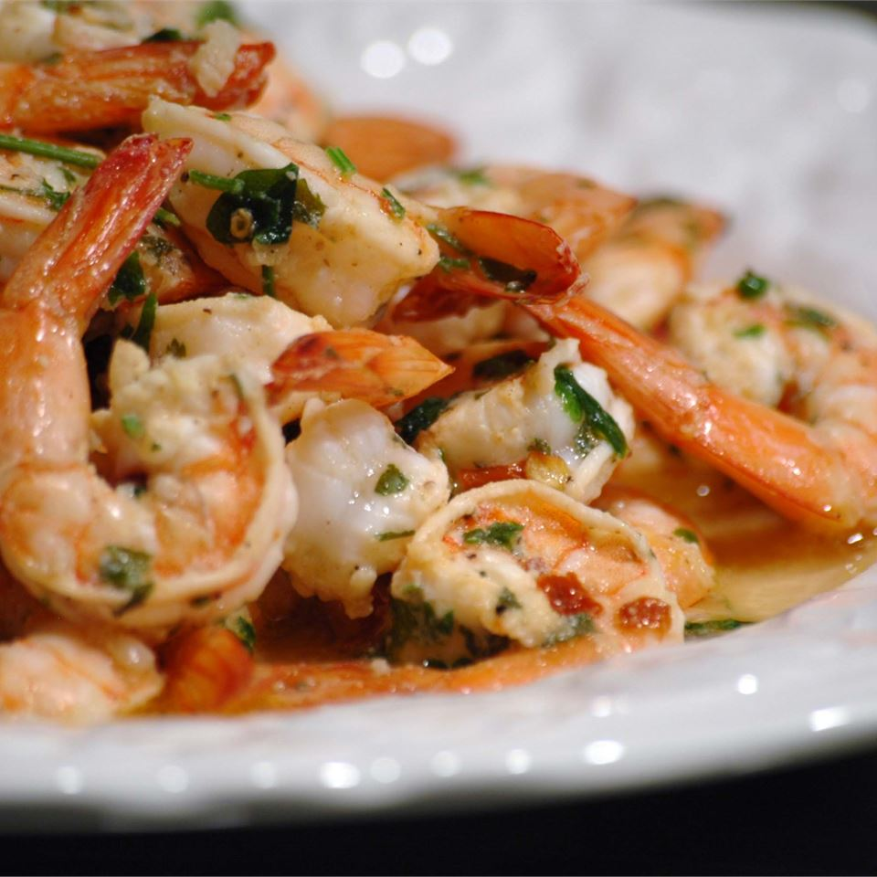

Grilled Shrimp Scampi

Description
A definite favorite!! The marinade is so easy to prepare and can be done ahead of time. Instead of making kabobs, we used a grilling basket and cooked shrimp on the grill til it turned pink. Served over linguini with the following sauce: Saute together 1 stick butter, juice of 1 lemon, 1 T minced garlic, 1/4 cup vegetable oil, 1 T (or more to taste) red pepper flakes and a spash of white wine. Simply delicious!!!!!
Ingredients
- ¼ cup olive oil
- ¼ cup lemon juice
- 3 tablespoons chopped fresh parsley
- 1 tablespoon minced garlic
- ground black pepper to taste
- ¼ teaspoon crushed red pepper flakes to taste
- 1½ pounds medium shrimp, peeled and deveined
Steps
- In a large, non-reactive bowl, stir together the olive oil, lemon juice, parsley, garlic, and black pepper. Season with crushed red pepper, if desired. Add shrimp, and toss to coat. Marinate in the refrigerator for 30 minutes.
- Preheat grill for high heat. Thread shrimp onto skewers, piercing once near the tail and once near the head. Discard any remaining marinade.
- Lightly oil grill grate. Grill for 2 to 3 minutes per side, or until opaque.